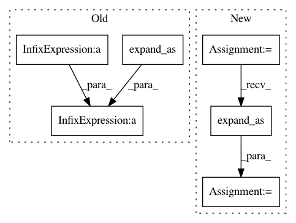

ecd61db602342c9580fc047ccdb296a1d8668d96,gpytorch/functions/_diagonalization.py,Diagonalization,forward,#Any#Any#Any#Any#Any#Any#Any#,12
Before Change
t_mat = t_mat.unsqueeze(0)
mins = lazify(t_mat).diag().min(dim=-1, keepdim=True)[0].unsqueeze(-1)
jitter_mat = (settings.tridiagonal_jitter.value() * mins) * torch.eye(
t_mat.size(-1), device=t_mat.device, dtype=t_mat.dtype
).expand_as(t_mat)
eigenvalues, eigenvectors = lanczos.lanczos_tridiag_to_diag(t_mat + jitter_mat)
// Get orthogonal matrix and eigenvalues
q_mat = q_mat.matmul(eigenvectors)
After Change
t_mat = t_mat.unsqueeze(0)
mins = torch.diagonal(t_mat, dim1=-1, dim2=-2).min(dim=-1, keepdim=True).solution
jitter_val = settings.tridiagonal_jitter.value()
jitter_mat = torch.diag_embed(jitter_val * mins).expand_as(t_mat)
eigenvalues, eigenvectors = lanczos.lanczos_tridiag_to_diag(t_mat + jitter_mat)
// Get orthogonal matrix and eigenvalues
q_mat = q_mat.matmul(eigenvectors)
In pattern: SUPERPATTERN
Frequency: 3
Non-data size: 6
Instances
Project Name: cornellius-gp/gpytorch
Commit Name: ecd61db602342c9580fc047ccdb296a1d8668d96
Time: 2021-03-01
Author: wjm363@nyu.edu
File Name: gpytorch/functions/_diagonalization.py
Class Name: Diagonalization
Method Name: forward
Project Name: OpenNMT/OpenNMT-py
Commit Name: 45b82c02b045f6dd836cab34174b0e4d07fa1e10
Time: 2017-09-05
Author: wjbianjason@163.com
File Name: onmt/modules/WeightNorm.py
Class Name: WN_Conv2d
Method Name: forward
Project Name: OpenNMT/OpenNMT-py
Commit Name: 45b82c02b045f6dd836cab34174b0e4d07fa1e10
Time: 2017-09-05
Author: wjbianjason@163.com
File Name: onmt/modules/WeightNorm.py
Class Name: WN_ConvTranspose2d
Method Name: forward